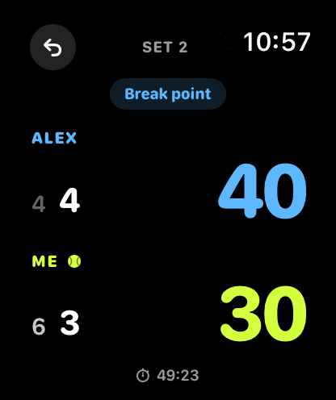
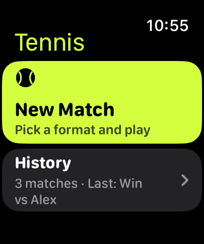
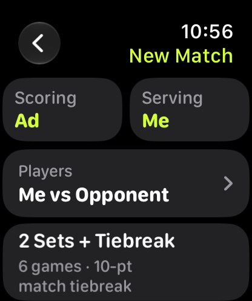
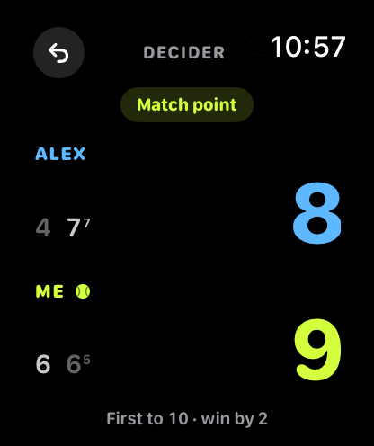
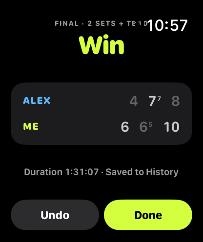
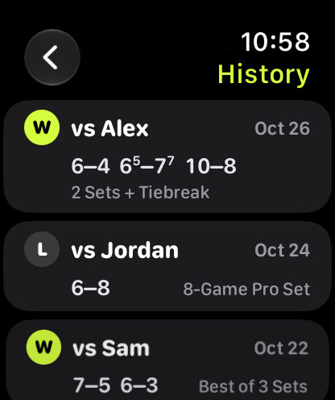

Tennis score on your wrist.
Turn the Digital Crown to award each point. Feel a tap for every point, game and set. Never look at your watch mid-rally again.
Test it onTestFlight
How it works
Turn the crown
Down gives you the point. Up gives your opponent the point.
Feel the tap
A haptic confirms each point, game and set. Keep your eyes on the ball.
Swipe to undo
Misclick? Swipe in from the left edge and the last point is gone.

Score with the crown
Start a match in two taps, then score by turning. One hand, no screen taps, no fumbling between points. Made a mistake? Swipe in from the left edge to undo.
Every format you play
Pick a preset or build your own.
- 2 sets + 10-point tiebreak
- Best of 3
- 8-game pro set
- 10-game pro set
- Fast4
- Ad or No-Ad
- Custom
Custom lets you set the number of sets and games, tiebreak at and to, win by 2, and a deciding set.


Big scores.
Large numerals you can read at a glance, with the server marked. The screen flags the moments that matter.
The timer keeps running with your wrist down, thanks to Always-On. Pause and pick up later: Resume Match restores the score exactly where you left off.
Every match counts as a workout
Each match is saved as a Tennis workout in Apple Health and Fitness, with heart rate and calories. The final score and duration are waiting when you finish.
Health access is optional. The app works without it.


Your match history
Every match with its set scores and duration. History syncs through your own iCloud, so a new watch picks it up too.
No accounts. No ads. No tracking.
Deuce Dial doesn't collect any personal data. Your matches stay on your watch and in your own iCloud.
Read the privacy policy